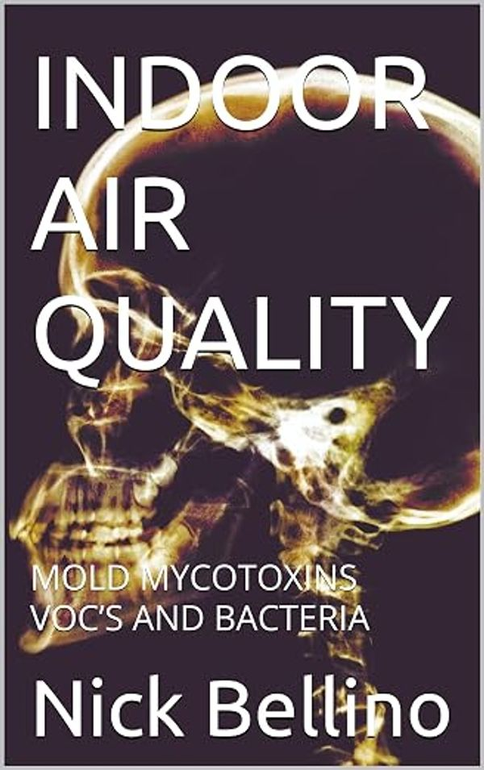
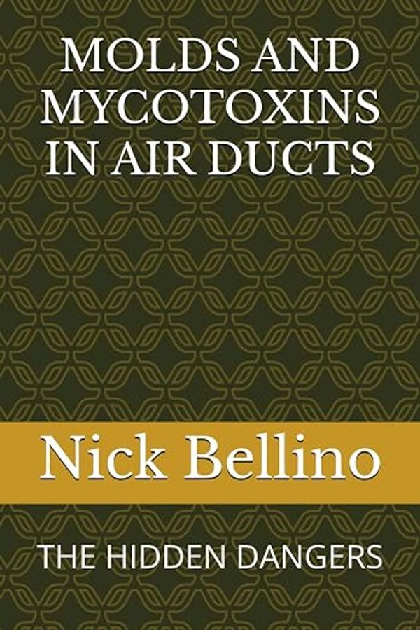
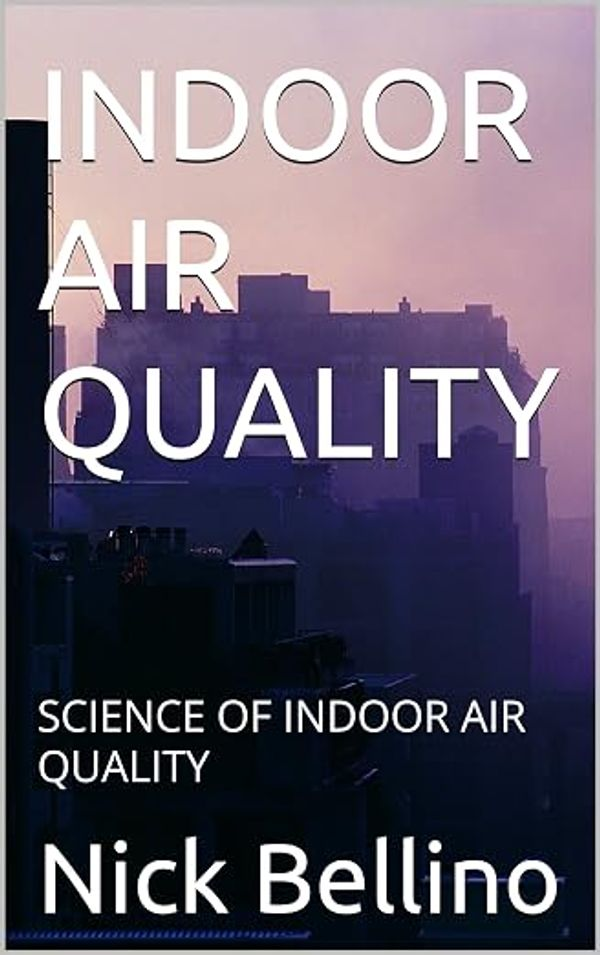
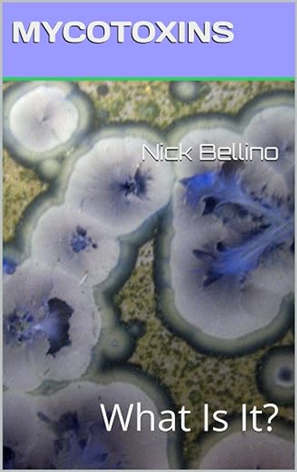
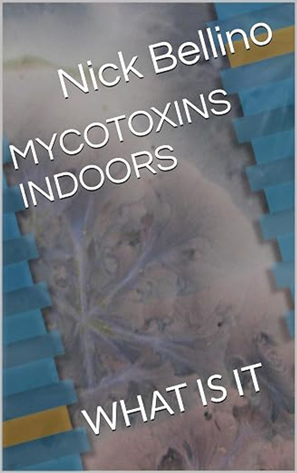

NADCA
Air Systems Cleaning Specialist (ASCS)
Listed as certified personnel for Ducts On Call in the National Air Duct Cleaners Association directory. Member since 02/11/2022, residential and commercial.
Verify on nadca.comNick Bellino · Owner, Ducts On Call Inc.
NADCA-certified Air Systems Cleaning Specialist and author of five books on mold, mycotoxins and indoor air quality. I own and operate Ducts On Call in the Madison, Wisconsin area, answer the phone myself, and do the work myself.
About
Most duct cleaning companies sell a cleaning. I start with a question: what is actually in this house's air? Mold, mycotoxins, VOCs, particulate, bacteria. Only then does it make sense to decide whether a mechanical cleaning will help, and how to do it properly: the whole system under vacuum, every register, grill and diffuser washed by hand, the home's air HEPA-filtered while the work happens.
Ducts On Call Inc. has served Madison and the surrounding Dane and Columbia County communities since the company was founded, and has been a NADCA member since February 2022. I hold NADCA's Air Systems Cleaning Specialist (ASCS) certification and an Indoor Air Quality Technician certification, and the business is licensed and insured.
Because the science kept raising questions the trade was not answering, I started writing. The result is five books on indoor air, mold and mycotoxins published in 2025, plus a doctoral-level literature review on the economics of residential mold contamination.
If your ducts don't need cleaning, Nick will say so rather than sell the job.
How work is quoted at Ducts On Call: test first, then clean only what needs it.
Credentials
NADCA
Listed as certified personnel for Ducts On Call in the National Air Duct Cleaners Association directory. Member since 02/11/2022, residential and commercial.
Verify on nadca.comBetter Business Bureau
Ducts On Call Inc., Nick Bellino, Owner. BBB business profile in Poynette, Wisconsin, categories: duct cleaning, dryer vent cleaning.
View BBB profileIndoor air quality
Indoor Air Quality Technician certification, with services spanning duct cleaning, dryer vent cleaning, IAQ services, duct sealing and mold remediation.
Certifications on ductsoncall.comBooks
Written for homeowners, landlords, property managers and other technicians. Available on Amazon in Kindle and paperback.

2025 · 174 pages

2025 · 157 pages

2025 · 124 pages

2025 · 176 pages

2025
Research & writing
A literature review submitted toward Doctor of Business Administration requirements. Synthesizes more than 100 peer-reviewed sources, industry standards, insurance guidelines and regulatory documents (2015–2025) into a cost framework for how homeowners, property managers, insurers and policymakers decide on mold.
A practical educational manuscript for homeowners, small landlords and residential property managers on locating moisture, fixing it, and keeping mold from returning.
Evidence-based articles on indoor air quality, mold, mycotoxins, particulate matter and healthy homes, with citations to EPA, CDC, WHO and peer-reviewed research.
Videos
The Ducts On Call YouTube channel has published more than 140 homeowner guides and indoor-air science Shorts.
Questions
Nick Bellino is the owner of Ducts On Call Inc., an air duct cleaning and indoor air quality company based in Poynette, Wisconsin that serves Madison and the surrounding Dane and Columbia County communities. He is a NADCA-certified Air Systems Cleaning Specialist (ASCS) and the author of five books on mold, mycotoxins and indoor air quality.
Nick holds the Air Systems Cleaning Specialist (ASCS) certification from the National Air Duct Cleaners Association (NADCA) and an Indoor Air Quality Technician certification. Ducts On Call has been a NADCA member since February 2022 and is listed for residential and commercial work.
Five titles published in 2025, all available on Amazon: Indoor Air Quality: Mold, Mycotoxins, VOC's and Bacteria; Molds and Mycotoxins in Air Ducts: The Hidden Dangers; Indoor Air Quality: Science of Indoor Air Quality; Mycotoxins: What Is It?; and Mycotoxins Indoors. ThriftBooks also catalogs Mycotoxins and Molds: The Science.
Madison, Wisconsin and the surrounding area: Sun Prairie, Waunakee, Middleton, Verona, Fitchburg, DeForest, Stoughton, Poynette, Portage, Lodi and Columbus. Ducts On Call is based in Poynette, WI.
Call or text (608) 906-1008 between 7 AM and 7 PM, email ductsoncall@gmail.com, or request an appointment through ductsoncall.com. For media and speaking inquiries, see the press kit page.
Not a medical one. Nick holds a Doctor of Business Administration (DBA) from East Bridge University and is an indoor air specialist and author. He tests and reports what is in a building's air and recommends what the results support; he does not diagnose or treat health conditions.
Looking for an expert source on duct cleaning, mold or indoor air for a story or podcast?
Bios, headshot and talking points are on the press kit page.
Find Ducts On Call
Contact
Call or text, 7 AM to 7 PM. Air duct cleaning, dryer vent cleaning and indoor air quality testing for Madison, Wisconsin and surrounding communities. By appointment and referral. Free inspections.